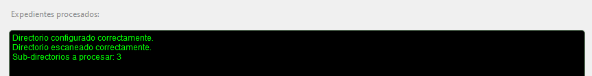

DeskPy Docs
Developed by DeskPyLab
St. Eng. Gabriel S., Jr. Software Developer
Source code in github.com/dgabrielsl/deskpy_smart"
Nombre del producto: SMART File Handler
Instalación
a. Software de distribución libre y "portable" (no requiere instalación), enlace de descarga: LINK.
b. Por políticas de seguridad del sistema operativo de Windows, al ser un archivo ejecutable, al descargar y ejecutar directamente puede generar la alerta de "Software malicioso", seleccionar la opción de "más información" y "ejecutar de todas formas".
Configuración
a. Ejecutar el software o aplicación.
b. Establecer el directorio de trabajo (carpeta con una o más subcarpetas) con los documentos y nombres claves definidos.
Ejemplo:

c. En la ventana inferior se mostrarán en pantalla 3 avisos:
- Directorio configurado correctamente.
- Directorio escaneado correctamente.
- Cantidad de expedientes (sub-carpetas dentro del directorio seleccionado) a procesar.
Ejemplo:
c. Una vez configurado el directorio el usuario puede escanear los datos en un expediente pulsando "Leer", la aplicación leerá el documento designado para tomar los datos correspondientes y rellenar los campos requeridos de forma automática.
Ejemplo:

*El usuario puede validar los datos en los campos y puede modificarlos si así lo requiere.
*Los botones al lado de cada campo de texto permiten borrar el texto completo.
*También puede configurar la ruta o directorio de trabajo y pulsar "Auto". Esta opción no permite verificar los datos uno a uno pero hace el proceso más rápido y sencillo, ya que procesa un expediente tras otro hasta completar todos.
*En la pantalla negra se reportan uno a uno los pasos así como los expedientes trabajados.
Manipulación de documentos
a. Nombres clave:
*Entrada (como debe nombrarse/encontrarse en la carpeta a procesar).
*Salida (resultado generado por el programa).
- entrada → (affidavit / aff) → salida → KIT
- entrada → firma → salida → FIRMA REPRESENTANTE LEGAL
- entrada → (buró / buro / gente / multi) → salida → *
- entrada → form → salida → FORMULARIO MANUAL
- entrada → (rep / fs) → salida → REPORTE ONFIDO
- entrada → (orden, orden1, 2, 3 [...]) → salida → ORDEN PATRONAL 1, 2, 3 [...]
- entrada → (origen, origen1, 2, 3 [...]) → salida → ORIGEN DE FONDOS 1, 2, 3 [...]
- entrada → (id1 + id2) → salida → "ID CARA 1", "ID CARA 2" & "ID"
b. Formatos de archivos soportados para OCR (lectura de texto): .pdf
c. Formatos de archivos soportados para conversión de imágenes a PDF: .png, .jpg, .jpeg, .svg, .gif, .webp, .bmp, .tif, .jfif
d. Cualquier documento a excepción del "affidavit" puede guardarse en formato de imagen y se convertirá en PDF.
e. Nombrar los documentos a procesar en mayúsculas/minúsculas no afecta el funcionamiento del programa.
f. Otras páginas nuevas dentro del "affidavit" las guardará como "(unidentified document)".
j. Si por error de la aplicación no reconoce una página, también lo guardará como "(unidentified document)", pero en ningún caso el programa omitirá guardar página(s) no reconocida(s) contenida(s) en el "affidavit".
h. Cualquier página no reconocida, se guardará con la certifición de firmas incluida.
Barra de herramientas
Ejemplo:
El usuario dispone de las herramientas:
- Documentación
- Buscar actualizaciones.
- Ir al directorio de trabajo.
Características adicionales
Accesos directos por teclado
- Documentación → F1 o Ctrl+H
- Buscar actualizaciones → F2 o Ctrl+U
- Abrir directorio de trabajo → F3 o Ctrl+O
- Seleccionar el directorio de trabajo → F5
- Leer → Space
- Procesar → Enter
- Auto → Ctrl+Enter
- Limpiar campo ID → F6
- Limpiar campo Nombre y apellidos → F7